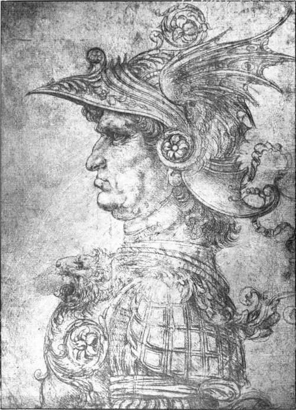

The Sculpture. Part 2
Description
This section is from the book "Leonardo Da Vinci", by Edward McCurdy. Also available from Amazon: Leonardo Da Vinci.
The Sculpture. Part 2
Whereas Taccone only refers to the horse, the lines of Pietro Lazzarone,2 " De Nuptiis Imperatorie Maiestatis," state that the statue had the figure of the rider:
1 Uzielli (1896), p. 166.
2 Ibid.
Fronte stabat prima, quern totus noverat orbis Sfortiae Franciscus Ligurum dominator et altae Insubriae, portatus equo ....
An epigram which, from the reference in it to Gian Galeazzo, must have been written before his death in October, 1494, is inscribed " Johannes Tollentinus in divi Francisci Sfortiae erea statua." But this inscription, Taccone's line, Pacioli's estimate of its weight, the couplet in which Lancino Curzio1 foretold the supreme moment:
Expectant animi, molemque futuram Suspiciunt; fluat aes; vox erit: Ecce deus, these are all anticipations of an event which was never realized.
The statue was never cast in bronze. Hence the taunt uttered by Michelangelo to Leonardo in Florence, which the " Anonimo Fiorentino " records: " tu, che facesti un disegnio d'uno cavallo per gittarlo di bronzo e non lo potesti gittare, et per vergogna lo lasciasti stare!"
The " Anonimo Fiorentino" says that the casting in bronze was considered an impossibility because Leonardo wished to cast it in one piece, and the work remained unfinished.
The real cause was not in his control. Ludovic had drained his exchequer by subsidies to his allies, and he had no money either for the expense of casting the statue or for the salaries of his servants. This is shown by the fragments of a letter from Leonardo to the Duke. It was written between the 9th of November, 1497, and the 9th of February, 1498, i.e., between the date when, as the result of a quarrel with Leonardo, the Duke was endeavouring to find an artist to carry on his work in the Castle, and the occasion of their meeting at the assembly of the " Literati"-Pacioli's " laudabile e scientifico duello " -which was presumably preceded by a reconciliation. To this the letter probably formed the first tentative step. It reveals the darker side of life at Ludovic's court. The broken sentences of the torn sheet are in keeping with the reluctance of its theme. He is prouder in this utterance of humility than in his first offer of service:
1 Uzielli (1896), p. 178.
Plate 7. Study For Head Of A Warrior
British Museum
" My Lord, knowing the mind of your Excellency to be occupied . . , to remind your Lordship of my small matters and the arts put to silence . . .
that my silence was the cause of making your Lordship despise . . .
my life in your service, I hold myself ever ready to obey . . .
of the horse I will say nothing because I know the times . . .
to your Lordship how I was two years in arrears with my salary for the . . .
with two skilled workmen whose salary and expenses I had always paid . . .
that at last I found I had advanced the said work about 15 lire . . .
works of fame by which I could shew to those who shall see them that I have been . . .
everywhere, but I do not know where I could bestow my work to . . .
I having been taken up with gaining a living . . .
not being informed how it is, I find myself . . .
you remember the commission to paint the Camerini . . .
I conveyed to your Lordship only requesting . . ." 1
The work upon the statue had already been abandoned for a considerable period of time. No dated references show him at work upon it after the model was exhibited in 1493. The question whether two models were in existence rests upon whether his preparations had already reached this stage before the recommencement in April, 1490. In all probability the model exhibited in 1493 was identical with the statue of which Fra Sabba da Castig-lione records the destruction when the French entered Milan: " I have to record-and I cannot speak of it without grief and indignation-so noble and masterly a work made a target by the Gascon bowmen."
1 C. A., 335 v.
This is believed to have taken place in April, 1500, after the battle of Novara, as on the occasion of the first French occupation in October, 1499, the soldiers were specially ordered to refrain from pillage. Vasari also says it was totally destroyed by the French when they entered Milan. The destruction can only have been partial. Enough was left to cause the Duke of Ferrara to write to his resident at Milan, Giovanni Valla, on the 19th of September, 1501, to obtain from the Cardinal of Rouen "the model of a horse which the Lord Ludovic intended to have cast, which model was made by the Master Leonardo," which, he said, was " daily perishing." 1 The last record of it is in the reply of Giovanni Valla, of September 24th, to the effect that the Cardinal had expressed himself as willing, but had stated that he had no authority to permit its removal without the express permission of Louis XII.
" It is better to imitate the works of antiquity than modern works."2 The note is one of several made by Leonardo with reference to the bronze equestrian statue of Regisole at Pavia, of which he said the movement was more admirable than anything else.
His notes continue: " One cannot have both beauty and utility as seen in fortresses and men." " The trot is almost the nature of the free horse." " Where natural vivacity is lacking it is necessary to create it by art." It is thus to seek principles that Leonardo studied the antique in equestrian statuary. His research was only limited by opportunity.
His interest in the representation of the horse found expression in his art at least as early as the cartoon for the Adoration of the Magi.
1 Campori, " Nuovi Documenti," etc.
2 C. A., 147 r.
The equestrian statue of Marcus Aurelius restored by order of Sextus IV., and set up in 1473 in the Piazza of S. Giovanni in Laterano, had been studied by Verrocchio, who was then in Rome doing work in silver for the Pope. Vasari associates his study of antique statuary in Rome, and especially of this statue, with his decision to seek work as sculptor rather than goldsmith.
Continue to:
Tags
leonardo da vinci, pictures, drawings, galleries, statues, da vinci